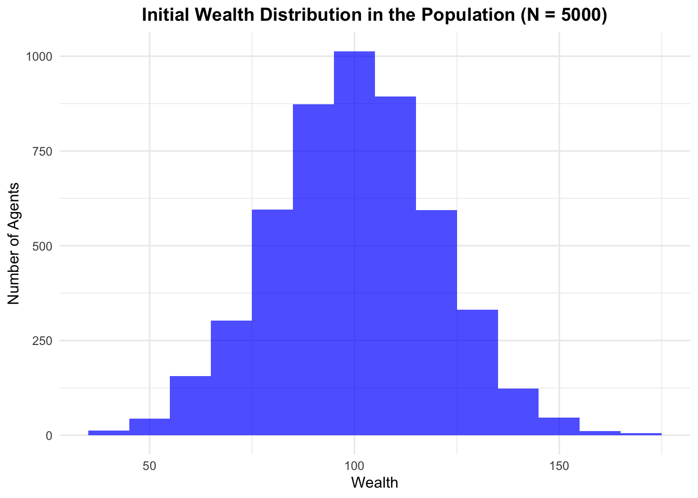

Assignment 2 was to recreate an agent-based simulation of wealth distribution in R (originally in Python) and play around with the parameters to figure out how it works.
A Simulation of Wealth Distribution
To create an agent-based simulation of wealth distribution, we must first define three critical components: the population, the interaction and the transaction.
Population
The first component we need to define is the population. How many agents are in the population and how is wealth initially distributed? For this first simulation, we have decided that there are 5000 agents in the population and that wealth is initially normally distributed (M = 100, SD = 20).
Code
# Load the necessary librarysuppressMessages(library(tidyverse))# Set seed for reproducibilityset.seed(123)# Define the initial population: 5000 agents (normally distributed with M = 100, sd = 20)gaussian_population<-tibble(wealth =rnorm(5000, mean =100, sd =20))# Plot a histogram of the initial wealth distribution in the populationggplot(gaussian_population, aes(x =wealth))+geom_histogram(binwidth =10, fill ="blue", alpha =0.7)+labs(title ="Initial Wealth Distribution in the Population (N = 5000)", x ="Wealth", y ="Number of Agents")+theme_minimal()+theme(plot.title =element_text(hjust =0.5, face ="bold"))

Interaction
The second component we need to define is the interaction. How are the agents selected that will interact with each other? For this first simulation, we have chosen a random interaction, where two agents are randomly selected from the population.
Code
# Define the random interactionrandom_interaction<-function(population){# Randomly sample two agents from the populationsampled_agents<-sample(1:nrow(population), 2)}
Transaction
The third component we need to define is the transaction. How do agents interact with each other? For this first simulation, we have chosen the random-split transaction. The two interacting agents will add up their wealth and then divide it randomly between themselves.
Code
# Define the random split transactionrandom_split<-function(agent_i_wealth, agent_j_wealth){# Calculate the total wealth of both agentstotal_wealth<-agent_i_wealth+agent_j_wealth# Allocate a random share of the total wealth to agent iagent_i_new_wealth<-runif(1, min =0, max =total_wealth)# Allocate the remaining share of the total wealth to agent jagent_j_new_wealth<-total_wealth-agent_i_new_wealth# Return the updated wealth for both agentsreturn(c(agent_i_new_wealth, agent_j_new_wealth))}
Simulation
Now that we have defined the three critical components of an agent-based simulation, we can define the simulation. A simulation takes an initial population and at each time step selects agents using the defined interaction and then uses the defined transaction to simulate how they interact. In our case, the simulation randomly selects two agents from the population, adds up their wealth, and then randomly divides it again between them 200,000 times.
Code
# Define how a simulation is runsimulate<-function(population, interaction, transaction, time_steps){for(tinseq_len(time_steps)){sampled_agents<-interaction(population)# Get the wealth of the sampled agentsagents_wealth<-population$wealth[sampled_agents]# Perform the transaction and update wealthnew_wealth<-transaction(agents_wealth[1], agents_wealth[2])# Update the population wealthpopulation$wealth[sampled_agents]<-new_wealth}# Return the updated populationreturn(population)}# Run the first simulationsimulation_1<-simulate( population =gaussian_population, interaction =random_interaction, transaction =random_split, time_steps =200000)
Visualization
There are several ways to visualize what happened in the simulation. Here we have plotted the initial wealth distribution in the population (blue) and the resulting wealth distribution after 200,000 random-split transactions between two random agents (green). The Gini coefficient (G) measures the wealth inequality in the population, ranging from 0 (very equal) to 1 (very unequal).
Code
# Define the Gini coefficientgini<-function(population){# Sort the agents in the population by wealthx<-sort(population$wealth)# Get the number of agents in the populationn<-length(x)# Calculate the numeratornumer<-2*sum((1:n)*x)# Calculate the denominatordenom<-n*sum(x)# Calculate the Gini coefficientgini<-((numer/denom)-(n+1)/n)# Return the Gini coefficientreturn(gini)}# Plot histograms of wealth before and after the simulationggplot()+# Histogram for "Before the Simulation"geom_histogram( data =gaussian_population,aes(x =wealth, fill ="Before the Simulation"), position ="identity", alpha =0.5, binwidth =20)+# Histogram for "After the Simulation"geom_histogram( data =simulation_1,aes(x =wealth, fill ="After the Simulation"), position ="identity", alpha =0.5, binwidth =20)+labs( title ="Wealth Distribution Before and After the Simulation", x ="Wealth", y ="Number of Agents")+scale_fill_manual( values =c("Before the Simulation"="blue","After the Simulation"="green"), name =NULL, # Title for the legend labels =c(paste("Before the Simulation (G = ",round(gini(gaussian_population), 2), ")", sep =""),paste("After the Simulation (G = ",round(gini(simulation_1), 2), ")", sep ="")))+theme_minimal()+theme( plot.title =element_text(hjust =0.5, face ="bold"), legend.position ="top", panel.grid.minor =element_blank())+guides(fill =guide_legend(title =NULL))
---title: "Assignment 2"---Assignment 2 was to recreate an agent-based simulation of wealth distribution in R ([originally in Python](https://github.com/norvig/pytudes/blob/main/ipynb/Economics.ipynb#js-repo-pjax-container)) and play around with the parameters to figure out how it works.## A Simulation of Wealth DistributionTo create an agent-based simulation of wealth distribution, we must first define three critical components: the population, the interaction and the transaction.### PopulationThe first component we need to define is the population. How many agents are in the population and how is wealth initially distributed? For this first simulation, we have decided that there are 5000 agents in the population and that wealth is initially normally distributed (M = 100, SD = 20).```{r population}# Load the necessary librarysuppressMessages(library(tidyverse))# Set seed for reproducibilityset.seed(123)# Define the initial population: 5000 agents (normally distributed with M = 100, sd = 20)gaussian_population <- tibble(wealth = rnorm(5000, mean = 100, sd = 20))# Plot a histogram of the initial wealth distribution in the populationggplot(gaussian_population, aes(x = wealth)) + geom_histogram(binwidth = 10, fill = "blue", alpha = 0.7) + labs(title = "Initial Wealth Distribution in the Population (N = 5000)", x = "Wealth", y = "Number of Agents") + theme_minimal() + theme(plot.title = element_text(hjust = 0.5, face = "bold"))```### InteractionThe second component we need to define is the interaction. How are the agents selected that will interact with each other? For this first simulation, we have chosen a random interaction, where two agents are randomly selected from the population.```{r interaction}# Define the random interactionrandom_interaction <- function(population) { # Randomly sample two agents from the population sampled_agents <- sample(1:nrow(population), 2)}```### TransactionThe third component we need to define is the transaction. How do agents interact with each other? For this first simulation, we have chosen the random-split transaction. The two interacting agents will add up their wealth and then divide it randomly between themselves.```{r transaction}# Define the random split transactionrandom_split <- function(agent_i_wealth, agent_j_wealth) { # Calculate the total wealth of both agents total_wealth <- agent_i_wealth + agent_j_wealth # Allocate a random share of the total wealth to agent i agent_i_new_wealth <- runif(1, min = 0, max = total_wealth) # Allocate the remaining share of the total wealth to agent j agent_j_new_wealth <- total_wealth - agent_i_new_wealth # Return the updated wealth for both agents return(c(agent_i_new_wealth, agent_j_new_wealth))}```### SimulationNow that we have defined the three critical components of an agent-based simulation, we can define the simulation. A simulation takes an initial population and at each time step selects agents using the defined interaction and then uses the defined transaction to simulate how they interact. In our case, the simulation randomly selects two agents from the population, adds up their wealth, and then randomly divides it again between them 200,000 times.```{r simulation}# Define how a simulation is runsimulate <- function(population, interaction, transaction, time_steps) { for (t in seq_len(time_steps)) { sampled_agents <- interaction(population) # Get the wealth of the sampled agents agents_wealth <- population$wealth[sampled_agents] # Perform the transaction and update wealth new_wealth <- transaction(agents_wealth[1], agents_wealth[2]) # Update the population wealth population$wealth[sampled_agents] <- new_wealth } # Return the updated population return(population) }# Run the first simulationsimulation_1 <- simulate( population = gaussian_population, interaction = random_interaction, transaction = random_split, time_steps = 200000)```### VisualizationThere are several ways to visualize what happened in the simulation. Here we have plotted the initial wealth distribution in the population (blue) and the resulting wealth distribution after 200,000 random-split transactions between two random agents (green). The Gini coefficient (G) measures the wealth inequality in the population, ranging from 0 (very equal) to 1 (very unequal).```{r}# Define the Gini coefficientgini <-function(population) {# Sort the agents in the population by wealth x <-sort(population$wealth)# Get the number of agents in the population n <-length(x)# Calculate the numerator numer <-2*sum((1:n) * x)# Calculate the denominator denom <- n *sum(x)# Calculate the Gini coefficient gini <- ((numer / denom) - (n +1) / n)# Return the Gini coefficientreturn(gini)}# Plot histograms of wealth before and after the simulationggplot() +# Histogram for "Before the Simulation"geom_histogram(data = gaussian_population,aes(x = wealth, fill ="Before the Simulation"),position ="identity",alpha =0.5,binwidth =20 ) +# Histogram for "After the Simulation"geom_histogram(data = simulation_1,aes(x = wealth, fill ="After the Simulation"),position ="identity",alpha =0.5,binwidth =20 ) +labs(title ="Wealth Distribution Before and After the Simulation",x ="Wealth",y ="Number of Agents" ) +scale_fill_manual(values =c("Before the Simulation"="blue","After the Simulation"="green" ),name =NULL, # Title for the legendlabels =c(paste("Before the Simulation (G = ",round(gini(gaussian_population), 2), ")", sep =""),paste("After the Simulation (G = ",round(gini(simulation_1), 2), ")", sep ="") ) ) +theme_minimal() +theme(plot.title =element_text(hjust =0.5, face ="bold"),legend.position ="top",panel.grid.minor =element_blank() ) +guides(fill =guide_legend(title =NULL))```